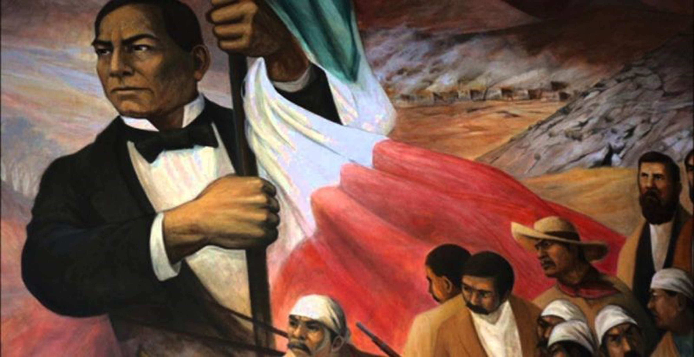
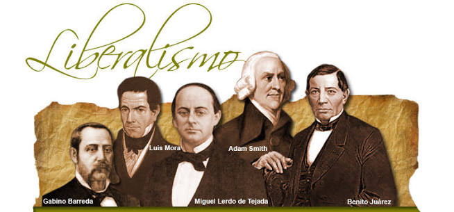
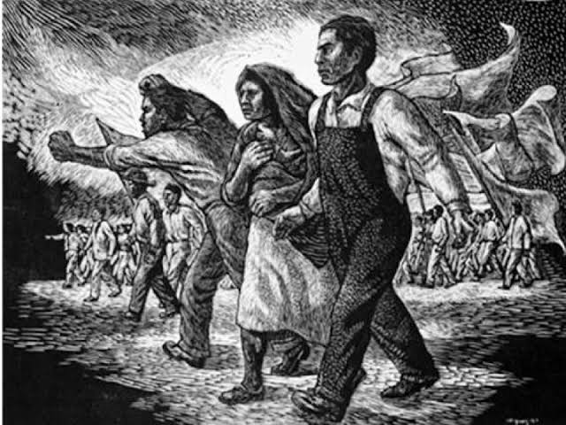

01 / ANTECEDENTES
Contexto histórico

El liberalismo mexicano fue una corriente política, económica y social que defendió principios como la libertad individual, la igualdad ante la ley, la propiedad privada y la limitación del poder de las instituciones tradicionales. Sus ideas influyeron en la construcción del Estado mexicano durante el siglo XIX.
Después de la Independencia, consumada en 1821, México tuvo dificultades para establecer un gobierno estable. Durante las primeras décadas del país independiente se produjeron enfrentamientos entre federalistas y centralistas, cambios de presidentes, conflictos militares y problemas económicos. También existían desacuerdos sobre la relación que debía mantener el gobierno con la Iglesia católica y el ejército.
La Iglesia poseía grandes extensiones de tierra y tenía influencia en la educación, la vida social y diversas actividades económicas. El ejército contaba con fueros especiales, es decir, ciertos asuntos de sus integrantes eran juzgados por tribunales militares. Para muchos liberales, estos privilegios impedían establecer una sociedad con las mismas leyes para todos.
Las ideas liberales no aparecieron de repente en 1855. Ya habían existido intentos de reforma, como los impulsados por Valentín Gómez Farías en 1833, y una Constitución federal en 1824. Sin embargo, la transformación más importante ocurrió a mediados del siglo XIX, cuando los liberales buscaron reorganizar las instituciones y reducir los privilegios corporativos.
La Revolución de Ayutla, iniciada en 1854 contra el gobierno de Antonio López de Santa Anna, abrió el camino para que una nueva generación de liberales llegara al poder. Desde entonces se impulsaron leyes y una nueva Constitución que cambiaron la organización política de México.
02 / ORIGEN DEL PROCESO
Causas del liberalismo
El liberalismo mexicano se desarrolló como respuesta a problemas que dificultaban la organización del país. Sus partidarios consideraban necesario transformar las leyes, la economía y las relaciones entre el gobierno y las instituciones tradicionales.
Igualdad ante la ley
Los liberales querían reducir los fueros y privilegios especiales de grupos como el clero y el ejército, para que las personas estuvieran sujetas a un sistema jurídico común.
Libertades individuales
Defendían libertades como la expresión, la imprenta y la enseñanza, además del reconocimiento de derechos individuales frente al poder del gobierno.
Separación de la Iglesia y el Estado
Buscaban que las autoridades civiles administraran los asuntos del gobierno sin depender de la autoridad eclesiástica y que existieran instituciones civiles propias.
Transformación económica
Pretendían modificar la propiedad de bienes pertenecientes a corporaciones civiles y religiosas y facilitar su circulación en el mercado.
Organización republicana
Defendían una república federal, la división de poderes y un gobierno basado en leyes y representantes.
Modernización del país
Aspiraban a transformar las instituciones heredadas de la época colonial y crear condiciones para reorganizar la economía, la educación y la administración pública.
Otra causa importante fue la oposición a la dictadura de Santa Anna. El Plan de Ayutla, proclamado en 1854, convocó a combatir su gobierno y favoreció el surgimiento de una nueva etapa de reformas políticas.
03 / ACONTECIMIENTOS
Desarrollo histórico
El desarrollo del liberalismo mexicano fue un proceso prolongado. No consistió solamente en aprobar leyes: también incluyó revoluciones, debates políticos, guerras y la defensa de la soberanía nacional.
1. Revolución de Ayutla, 1854-1855
El movimiento surgió contra el gobierno de Antonio López de Santa Anna. Sus partidarios buscaban terminar con su régimen y convocar a una nueva organización política. Después de su triunfo en 1855, Juan Álvarez asumió la presidencia y posteriormente fue sucedido por Ignacio Comonfort. Esto permitió la llegada de destacados liberales al gobierno.
2. Primeras leyes liberales, 1855-1856
La Ley Juárez de 1855 limitó los fueros eclesiásticos y militares en determinados asuntos judiciales. En 1856, la Ley Lerdo estableció la desamortización de bienes de corporaciones civiles y religiosas, con el propósito de modificar la propiedad y favorecer su circulación económica. También se promulgó la Ley Iglesias, relacionada con los cobros parroquiales a las personas de menores recursos, y la Ley Lafragua, que reguló la libertad de imprenta.
3. Constitución de 1857
El 5 de febrero de 1857 fue jurada la nueva Constitución liberal. Reconoció derechos individuales, fortaleció el sistema federal y estableció la división de poderes. Su contenido provocó una fuerte oposición de sectores conservadores y de autoridades eclesiásticas, que rechazaban varios de sus principios y reformas.
4. Guerra de Reforma, 1858-1861
Después del conflicto político relacionado con el Plan de Tacubaya y el rechazo a la Constitución, México quedó dividido entre dos gobiernos. Los liberales, encabezados por Benito Juárez, defendían el orden constitucional; los conservadores apoyaban un proyecto político distinto. La guerra terminó con la victoria liberal y el regreso del gobierno de Juárez a la Ciudad de México en 1861.
5. Leyes de Reforma, 1859-1860
Durante la guerra, el gobierno liberal promulgó disposiciones que transformaron la relación entre la Iglesia y el Estado. Entre ellas estuvieron la nacionalización de los bienes eclesiásticos, el establecimiento del matrimonio civil, la creación del Registro Civil y la libertad de cultos. Estas medidas buscaban que asuntos como el matrimonio y el registro de nacimientos y defunciones fueran administrados por autoridades civiles.
6. Intervención francesa y Segundo Imperio, 1862-1867
Después de la suspensión temporal del pago de la deuda externa, Francia intervino militarmente en México. En 1864, Maximiliano de Habsburgo estableció el Segundo Imperio Mexicano. El gobierno republicano de Juárez continuó resistiendo y defendiendo la Constitución y la soberanía nacional.
7. Restauración de la República, 1867
La derrota del Imperio y la caída de Maximiliano permitieron el regreso de Juárez a la capital. La República fue restaurada y el proyecto liberal obtuvo una victoria decisiva. Durante los años siguientes continuó el esfuerzo por fortalecer las instituciones civiles y consolidar las reformas constitucionales.
04 / PROTAGONISTAS
Personajes y grupos importantes
El liberalismo fue impulsado por políticos, abogados, periodistas, militares e intelectuales. Aunque compartían algunos principios, no todos estaban de acuerdo en cada medida o en la velocidad con la que debían realizarse los cambios.

Benito Juárez
Abogado de origen zapoteco y presidente de México. Defendió la Constitución de 1857, encabezó el gobierno liberal durante la Guerra de Reforma y promovió las Leyes de Reforma. Durante la intervención francesa mantuvo la defensa de la República y la soberanía nacional.
Melchor Ocampo
Político e intelectual que participó en el movimiento liberal y en el gobierno de Juárez. Defendió la separación entre la Iglesia y el Estado y contribuyó al desarrollo de las reformas políticas y civiles.
Miguel Lerdo de Tejada
Político y economista liberal. Fue uno de los principales impulsores de la Ley Lerdo de 1856, que buscaba desamortizar propiedades de corporaciones civiles y religiosas.
Ignacio Comonfort
Participó en el triunfo de la Revolución de Ayutla y fue presidente de México. Durante su gobierno se aprobaron leyes liberales y se promulgó la Constitución de 1857, aunque después apoyó el Plan de Tacubaya, que desconocía esa Constitución.
Valentín Gómez Farías
Fue un precursor de las reformas liberales. Durante su participación en el gobierno en 1833 promovió medidas para limitar la influencia política de la Iglesia y del ejército, aunque muchas de ellas encontraron una fuerte oposición.
Ponciano Arriaga
Abogado y diputado constituyente que participó en los debates de la Constitución de 1857. Se interesó especialmente por los problemas sociales, la propiedad de la tierra y las condiciones de los sectores más desfavorecidos.
Los liberales
Defendían el sistema republicano federal, las libertades individuales, la igualdad jurídica y la reducción de los privilegios de las corporaciones tradicionales. Entre sus diferencias internas estaban las formas y los tiempos para aplicar las reformas.
Los conservadores
Muchos conservadores defendían una organización política centralista o monárquica y consideraban importante conservar el papel tradicional de la Iglesia y otras instituciones. No todos compartían exactamente las mismas ideas, pero se opusieron a buena parte del programa liberal de mediados del siglo XIX.
La Iglesia y el ejército
Como instituciones, la Iglesia y el ejército fueron afectados por leyes que limitaban ciertos privilegios, modificaban la propiedad de bienes o reducían su intervención en asuntos civiles. Esto contribuyó a la oposición contra las reformas.
05 / TRANSFORMACIONES
Consecuencias del liberalismo

El triunfo liberal produjo cambios profundos en las instituciones mexicanas. Sin embargo, sus consecuencias no fueron iguales para todos los grupos sociales: algunas medidas ampliaron derechos civiles, mientras que otras provocaron conflictos por la propiedad de la tierra y por el poder económico.
Consecuencias políticas
Se fortaleció el modelo republicano federal y la Constitución se convirtió en una referencia central para organizar el gobierno. La división de poderes y el reconocimiento de derechos individuales contribuyeron al desarrollo del constitucionalismo mexicano. La victoria liberal de 1867 también significó la derrota del Segundo Imperio y la restauración de la República.
Consecuencias económicas
La Ley Lerdo y otras disposiciones modificaron la propiedad de bienes pertenecientes a corporaciones civiles y religiosas. Los liberales esperaban fomentar la circulación de la propiedad y la actividad económica. Sin embargo, los resultados fueron desiguales: algunos bienes cambiaron de propietario y ciertas comunidades indígenas vieron amenazada la propiedad comunal de sus tierras.
Consecuencias sociales
Las reformas impulsaron el principio de igualdad jurídica y limitaron determinados privilegios. Aun así, la pobreza, la desigualdad y las diferencias entre grupos sociales continuaron. La transformación legal no significó que todas las personas obtuvieran de inmediato las mismas oportunidades.
Consecuencias religiosas y civiles
El matrimonio civil, el Registro Civil y la libertad de cultos contribuyeron a establecer instituciones civiles independientes de la autoridad religiosa. Con las Leyes de Reforma se avanzó en la separación entre la Iglesia y el Estado, uno de los cambios más importantes del periodo.
Consecuencias educativas y culturales
Las ideas liberales favorecieron el debate sobre la educación, la libertad de enseñanza y la formación de ciudadanos. También promovieron la discusión sobre la importancia de la ciencia, la instrucción pública y la participación política.
Consecuencias territoriales y nacionales
El liberalismo no produjo una gran modificación territorial por sí mismo, pero el periodo estuvo marcado por la intervención francesa y la defensa de la soberanía mexicana. La victoria republicana de 1867 reafirmó la independencia política del país frente al proyecto imperial.
06 / CRONOLOGÍA
Línea del tiempo
Los siguientes acontecimientos permiten observar cómo las ideas liberales pasaron de ser propuestas políticas a convertirse en leyes e instituciones.
1824
Se establece una Constitución federal después de la Independencia.
1833
Valentín Gómez Farías impulsa reformas liberales que encuentran oposición.
1854
Se proclama el Plan de Ayutla contra el gobierno de Santa Anna.
1855
Triunfa la Revolución de Ayutla y se promulga la Ley Juárez.
1856
Se promulga la Ley Lerdo y se reúne el Congreso Constituyente.
1857
Se promulga la Constitución liberal el 5 de febrero.
1858
Comienza la Guerra de Reforma entre liberales y conservadores.
1859-1860
El gobierno de Juárez promulga las principales Leyes de Reforma.
1861
El gobierno liberal entra a la Ciudad de México tras la Guerra de Reforma.
1862
El ejército mexicano vence a las fuerzas francesas en la Batalla de Puebla del 5 de mayo.
1864
Maximiliano de Habsburgo establece el Segundo Imperio Mexicano.
1867
Cae el Segundo Imperio y se restaura la República.
1873
Las Leyes de Reforma se incorporan a la Constitución.
07 / REFLEXIÓN PERSONAL
Conclusión
Considero importante conocer el liberalismo mexicano porque permite comprender que la organización política y las libertades que existen en la actualidad se construyeron a través de un largo proceso histórico. Durante el siglo XIX, México tuvo que decidir qué tipo de gobierno quería establecer y cómo debían relacionarse las autoridades civiles con las instituciones tradicionales.
También considero que las acciones de personajes como Benito Juárez, Melchor Ocampo y Ponciano Arriaga muestran la importancia de debatir las leyes y buscar cambios en la sociedad. La Constitución de 1857 y las Leyes de Reforma ayudaron a transformar el país, aunque no resolvieron todos sus problemas.
Este proceso también me permite reconocer que las reformas pueden tener consecuencias diferentes para cada grupo social. Por ejemplo, las medidas sobre la propiedad de la tierra tuvieron efectos complicados para algunas comunidades indígenas. Por eso, estudiar la historia no significa solamente memorizar fechas y nombres, sino analizar los beneficios, los conflictos y las dificultades que acompañaron los cambios.
En conclusión, conocer el liberalismo es importante para entender el origen del Estado laico, la igualdad jurídica, el sistema republicano y varias de las instituciones mexicanas actuales. Conocer nuestro pasado nos ayuda a valorar los derechos, comprender los problemas del presente y reflexionar sobre el tipo de sociedad que queremos construir.
08 / CONSULTA HISTÓRICA
Fuentes de información
Para investigar el liberalismo mexicano es importante consultar instituciones históricas y documentos oficiales que permitan comprobar los acontecimientos, las leyes y las fechas.
- Instituto Nacional de Estudios Históricos de las Revoluciones de México (INEHRM). Liberalismo mexicano
- Instituto Nacional de Estudios Históricos de las Revoluciones de México (INEHRM). Los diputados constituyentes de 1856-1857
- Secretaría de la Defensa Nacional. Proclamación de las Leyes de Reforma
- Cámara de Diputados del H. Congreso de la Unión. Documentos legislativos e históricos
- Archivo General de la Nación. Documentos históricos de México
Consulta las páginas enlazadas para ampliar la información y verificar los datos históricos. Las fuentes deben corresponder a la información utilizada en el proyecto.